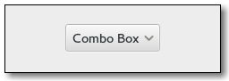

Gtk.ComboBox
Example
| Subclasses: | Gtk.AppChooserButton, Gtk.ComboBoxText |
|---|
Methods
| Inherited: | Gtk.Bin (1), Gtk.Container (27), Gtk.Widget (256), GObject.Object (33), Gtk.Buildable (10), Gtk.CellEditable (3), Gtk.CellLayout (9) |
|---|
| static | new() |
| static | new_with_area(area) |
| static | new_with_area_and_entry(area) |
| static | new_with_entry() |
| static | new_with_model(model) |
| static | new_with_model_and_entry(model) |
| get_active() | |
| get_active_id() | |
| get_active_iter() | |
| get_add_tearoffs() | |
| get_button_sensitivity() | |
| get_column_span_column() | |
| get_entry_text_column() | |
| get_focus_on_click() | |
| get_has_entry() | |
| get_id_column() | |
| get_model() | |
| get_popup_accessible() | |
| get_popup_fixed_width() | |
| get_row_span_column() | |
| get_title() | |
| get_wrap_width() | |
| popdown() | |
| popup() | |
| popup_for_device(device) | |
| set_active(index_) | |
| set_active_id(active_id) | |
| set_active_iter(iter) | |
| set_add_tearoffs(add_tearoffs) | |
| set_button_sensitivity(sensitivity) | |
| set_column_span_column(column_span) | |
| set_entry_text_column(text_column) | |
| set_focus_on_click(focus_on_click) | |
| set_id_column(id_column) | |
| set_model(model) | |
| set_popup_fixed_width(fixed) | |
| set_row_separator_func(func, *data) | |
| set_row_span_column(row_span) | |
| set_title(title) | |
| set_wrap_width(width) |
Virtual Methods
| Inherited: | Gtk.Container (10), Gtk.Widget (82), GObject.Object (7), Gtk.Buildable (10), Gtk.CellEditable (3), Gtk.CellLayout (9) |
|---|
| do_changed() | |
| do_format_entry_text(path) |
Properties
| Inherited: | Gtk.Container (3), Gtk.Widget (38), Gtk.CellEditable (1) |
|---|
| Name | Type | Flags | Short Description |
|---|---|---|---|
| active | int | r/w | The item which is currently active |
| active-id | str | r/w | The value of the id column for the active row |
| add-tearoffs | bool | r/w | Whether dropdowns should have a tearoff menu item |
| button-sensitivity | Gtk.SensitivityType | r/w | Whether the dropdown button is sensitive when the model is empty |
| cell-area | Gtk.CellArea | r/w | The Gtk.CellArea used to layout cells |
| column-span-column | int | r/w | TreeModel column containing the column span values |
| entry-text-column | int | r/w | The column in the combo box’s model to associate with strings from the entry if the combo was created with Gtk.ComboBox :has-entry = True |
| focus-on-click | bool | r/w | Whether the combo box grabs focus when it is clicked with the mouse |
| has-entry | bool | r/w | Whether combo box has an entry |
| has-frame | bool | r/w | Whether the combo box draws a frame around the child |
| id-column | int | r/w | The column in the combo box’s model that provides string IDs for the values in the model |
| model | Gtk.TreeModel | r/w | The model for the combo box |
| popup-fixed-width | bool | r/w | Whether the popup’s width should be a fixed width matching the allocated width of the combo box |
| popup-shown | bool | r | Whether the combo’s dropdown is shown |
| row-span-column | int | r/w | TreeModel column containing the row span values |
| tearoff-title | str | r/w | A title that may be displayed by the window manager when the popup is torn-off |
| wrap-width | int | r/w | Wrap width for laying out the items in a grid |
Style Properties
| Inherited: | Gtk.Widget (17) |
|---|
| Name | Type | Default | Flags | Short Description |
|---|---|---|---|---|
| appears-as-list | bool | False | r | Whether dropdowns should look like lists rather than menus |
| arrow-scaling | float | 1.0 | r | The amount of space used by the arrow |
| arrow-size | int | 15 | r | The minimum size of the arrow in the combo box |
| shadow-type | Gtk.ShadowType | Gtk.ShadowType.NONE | r | Which kind of shadow to draw around the combo box |
Signals
| Inherited: | Gtk.Container (4), Gtk.Widget (69), GObject.Object (1), Gtk.CellEditable (2) |
|---|
| Name | Short Description |
|---|---|
| changed | The changed signal is emitted when the active item is changed. |
| format-entry-text | For combo boxes that are created with an entry (See Gtk.ComboBox :has-entry ). |
| move-active | The ::move-active signal is a [keybinding signal][GtkBindingSignal] which gets emitted to move the active selection. |
| popdown | The ::popdown signal is a [keybinding signal][GtkBindingSignal] which gets emitted to popdown the combo box list. |
| popup | The ::popup signal is a [keybinding signal][GtkBindingSignal] which gets emitted to popup the combo box list. |
Fields
| Inherited: | Gtk.Bin (1), Gtk.Container (1), Gtk.Widget (1), GObject.InitiallyUnowned (3), GObject.Object (3) |
|---|
| Name | Type | Access | Description |
|---|---|---|---|
| parent_instance | Gtk.Bin | r |
Class Details
- class Gtk.ComboBox(**kwargs)
Bases: Gtk.Bin, Gtk.Container, Gtk.CellEditable, Gtk.CellLayout
A Gtk.ComboBox is a widget that allows the user to choose from a list of valid choices. The Gtk.ComboBox displays the selected choice. When activated, the Gtk.ComboBox displays a popup which allows the user to make a new choice. The style in which the selected value is displayed, and the style of the popup is determined by the current theme. It may be similar to a Windows-style combo box.
The Gtk.ComboBox uses the model-view pattern; the list of valid choices is specified in the form of a tree model, and the display of the choices can be adapted to the data in the model by using cell renderers, as you would in a tree view. This is possible since Gtk.ComboBox implements the Gtk.CellLayout interface. The tree model holding the valid choices is not restricted to a flat list, it can be a real tree, and the popup will reflect the tree structure.
To allow the user to enter values not in the model, the “has-entry” property allows the Gtk.ComboBox to contain a Gtk.Entry. This entry can be accessed by calling Gtk.Bin.get_child () on the combo box.
For a simple list of textual choices, the model-view API of Gtk.ComboBox can be a bit overwhelming. In this case, Gtk.ComboBoxText offers a simple alternative. Both Gtk.ComboBox and Gtk.ComboBoxText can contain an entry.
- static new()
Returns: A new Gtk.ComboBox. Return type: Gtk.Widget Creates a new empty Gtk.ComboBox.
New in version 2.4.
- static new_with_area(area)
Parameters: area (Gtk.CellArea) – the Gtk.CellArea to use to layout cell renderers Returns: A new Gtk.ComboBox. Return type: Gtk.Widget Creates a new empty Gtk.ComboBox using area to layout cells.
- static new_with_area_and_entry(area)
Parameters: area (Gtk.CellArea) – the Gtk.CellArea to use to layout cell renderers Returns: A new Gtk.ComboBox. Return type: Gtk.Widget Creates a new empty Gtk.ComboBox with an entry.
The new combo box will use area to layout cells.
- static new_with_entry()
Returns: A new Gtk.ComboBox. Return type: Gtk.Widget Creates a new empty Gtk.ComboBox with an entry.
New in version 2.24.
- static new_with_model(model)
Parameters: model (Gtk.TreeModel) – A Gtk.TreeModel. Returns: A new Gtk.ComboBox. Return type: Gtk.Widget Creates a new Gtk.ComboBox with the model initialized to model.
New in version 2.4.
- static new_with_model_and_entry(model)
Parameters: model (Gtk.TreeModel) – A Gtk.TreeModel Returns: A new Gtk.ComboBox Return type: Gtk.Widget Creates a new empty Gtk.ComboBox with an entry and with the model initialized to model.
New in version 2.24.
- get_active()
Returns: An integer which is the index of the currently active item, or -1 if there’s no active item. Return type: int Returns the index of the currently active item, or -1 if there’s no active item. If the model is a non-flat treemodel, and the active item is not an immediate child of the root of the tree, this function returns `gtk_tree_path_get_indices (path)[0]`, where `path` is the Gtk.TreePath of the active item.
New in version 2.4.
- get_active_id()
Returns: the ID of the active row, or None Return type: str or None Returns the ID of the active row of combo_box. This value is taken from the active row and the column specified by the Gtk.ComboBox :id-column property of combo_box (see Gtk.ComboBox.set_id_column ()).
The returned value is an interned string which means that you can compare the pointer by value to other interned strings and that you must not free it.
If the Gtk.ComboBox :id-column property of combo_box is not set, or if no row is active, or if the active row has a None ID value, then None is returned.
New in version 3.0.
- get_active_iter()
Returns: True, if iter was set iter: The uninitialized Gtk.TreeIter Return type: (bool, iter: Gtk.TreeIter) Sets iter to point to the current active item, if it exists.
New in version 2.4.
- get_add_tearoffs()
Returns: the current value of the :add-tearoffs property. Return type: bool Gets the current value of the :add-tearoffs property.
Deprecated since version 3.10.
Returns: Gtk.SensitivityType.ON if the dropdown button is sensitive when the model is empty, Gtk.SensitivityType.OFF if the button is always insensitive or Gtk.SensitivityType.AUTO if it is only sensitive as long as the model has one item to be selected. Return type: Gtk.SensitivityType Returns whether the combo box sets the dropdown button sensitive or not when there are no items in the model.
New in version 2.14.
- get_column_span_column()
Returns: the column span column. Return type: int Returns the column with column span information for combo_box.
New in version 2.6.
- get_entry_text_column()
Returns: A column in the data source model of combo_box. Return type: int Returns the column which combo_box is using to get the strings from to display in the internal entry.
New in version 2.24.
- get_focus_on_click()
Returns: True if the combo box grabs focus when it is clicked with the mouse. Return type: bool Returns whether the combo box grabs focus when it is clicked with the mouse. See Gtk.ComboBox.set_focus_on_click ().
New in version 2.6.
- get_has_entry()
Returns: whether there is an entry in combo_box. Return type: bool Returns whether the combo box has an entry.
New in version 2.24.
- get_id_column()
Returns: A column in the data source model of combo_box. Return type: int Returns the column which combo_box is using to get string IDs for values from.
New in version 3.0.
- get_model()
Returns: A Gtk.TreeModel which was passed during construction. Return type: Gtk.TreeModel Returns the Gtk.TreeModel which is acting as data source for combo_box.
New in version 2.4.
- get_popup_accessible()
Returns: the accessible object corresponding to the combo box’s popup. Return type: Atk.Object Gets the accessible object corresponding to the combo box’s popup.
This function is mostly intended for use by accessibility technologies; applications should have little use for it.
New in version 2.6.
- get_popup_fixed_width()
Returns: True if the popup uses a fixed width Return type: bool Gets whether the popup uses a fixed width matching the allocated width of the combo box.
New in version 3.0.
- get_row_span_column()
Returns: the row span column. Return type: int Returns the column with row span information for combo_box.
New in version 2.6.
- get_title()
Returns: the menu’s title in tearoff mode. This is an internal copy of the string which must not be freed. Return type: str Gets the current title of the menu in tearoff mode. See Gtk.ComboBox.set_add_tearoffs ().
New in version 2.10.
Deprecated since version 3.10.
- get_wrap_width()
Returns: the wrap width. Return type: int Returns the wrap width which is used to determine the number of columns for the popup menu. If the wrap width is larger than 1, the combo box is in table mode.
New in version 2.6.
- popdown()
Hides the menu or dropdown list of combo_box.
This function is mostly intended for use by accessibility technologies; applications should have little use for it.
New in version 2.4.
- popup()
Pops up the menu or dropdown list of combo_box.
This function is mostly intended for use by accessibility technologies; applications should have little use for it.
New in version 2.4.
- popup_for_device(device)
Parameters: device (Gdk.Device) – a Gdk.Device Pops up the menu or dropdown list of combo_box, the popup window will be grabbed so only device and its associated pointer/keyboard are the only Gdk.Devices able to send events to it.
New in version 3.0.
- set_active(index_)
Parameters: index_ (int) – An index in the model passed during construction, or -1 to have no active item Sets the active item of combo_box to be the item at index.
New in version 2.4.
- set_active_id(active_id)
Parameters: active_id (str or None) – the ID of the row to select, or None Returns: True if a row with a matching ID was found. If a None active_id was given to unset the active row, the function always returns True. Return type: bool Changes the active row of combo_box to the one that has an ID equal to active_id, or unsets the active row if active_id is None. Rows having a None ID string cannot be made active by this function.
If the Gtk.ComboBox :id-column property of combo_box is unset or if no row has the given ID then the function does nothing and returns False.
New in version 3.0.
- set_active_iter(iter)
Parameters: iter (Gtk.TreeIter or None) – The Gtk.TreeIter, or None Sets the current active item to be the one referenced by iter, or unsets the active item if iter is None.
New in version 2.4.
- set_add_tearoffs(add_tearoffs)
Parameters: add_tearoffs (bool) – True to add tearoff menu items Sets whether the popup menu should have a tearoff menu item.
New in version 2.6.
Deprecated since version 3.10.
Parameters: sensitivity (Gtk.SensitivityType) – specify the sensitivity of the dropdown button Sets whether the dropdown button of the combo box should be always sensitive (Gtk.SensitivityType.ON ), never sensitive (Gtk.SensitivityType.OFF ) or only if there is at least one item to display (Gtk.SensitivityType.AUTO ).
New in version 2.14.
- set_column_span_column(column_span)
Parameters: column_span (int) – A column in the model passed during construction Sets the column with column span information for combo_box to be column_span. The column span column contains integers which indicate how many columns an item should span.
New in version 2.4.
- set_entry_text_column(text_column)
Parameters: text_column (int) – A column in model to get the strings from for the internal entry Sets the model column which combo_box should use to get strings from to be text_column. The column text_column in the model of combo_box must be of type GObject.TYPE_STRING.
This is only relevant if combo_box has been created with Gtk.ComboBox :has-entry as True.
New in version 2.24.
- set_focus_on_click(focus_on_click)
Parameters: focus_on_click (bool) – whether the combo box grabs focus when clicked with the mouse Sets whether the combo box will grab focus when it is clicked with the mouse. Making mouse clicks not grab focus is useful in places like toolbars where you don’t want the keyboard focus removed from the main area of the application.
New in version 2.6.
- set_id_column(id_column)
Parameters: id_column (int) – A column in model to get string IDs for values from Sets the model column which combo_box should use to get string IDs for values from. The column id_column in the model of combo_box must be of type GObject.TYPE_STRING.
New in version 3.0.
- set_model(model)
Parameters: model (Gtk.TreeModel or None) – A Gtk.TreeModel Sets the model used by combo_box to be model. Will unset a previously set model (if applicable). If model is None, then it will unset the model.
Note that this function does not clear the cell renderers, you have to call Gtk.CellLayout.clear () yourself if you need to set up different cell renderers for the new model.
New in version 2.4.
- set_popup_fixed_width(fixed)
Parameters: fixed (bool) – whether to use a fixed popup width Specifies whether the popup’s width should be a fixed width matching the allocated width of the combo box.
New in version 3.0.
- set_row_separator_func(func, *data)
Parameters: - func (Gtk.TreeViewRowSeparatorFunc) – a Gtk.TreeViewRowSeparatorFunc
- data (object or None) – user data to pass to func, or None
Sets the row separator function, which is used to determine whether a row should be drawn as a separator. If the row separator function is None, no separators are drawn. This is the default value.
New in version 2.6.
- set_row_span_column(row_span)
Parameters: row_span (int) – A column in the model passed during construction. Sets the column with row span information for combo_box to be row_span. The row span column contains integers which indicate how many rows an item should span.
New in version 2.4.
- set_title(title)
Parameters: title (str) – a title for the menu in tearoff mode Sets the menu’s title in tearoff mode.
New in version 2.10.
Deprecated since version 3.10.
- set_wrap_width(width)
Parameters: width (int) – Preferred number of columns Sets the wrap width of combo_box to be width. The wrap width is basically the preferred number of columns when you want the popup to be layed out in a table.
New in version 2.4.
- do_changed()
Type: virtual
Signal Details
- Gtk.ComboBox.signals.changed(combo_box)
Signal Name: changed Flags: RUN_LAST Parameters: combo_box (Gtk.ComboBox) – The object which received the signal The changed signal is emitted when the active item is changed. The can be due to the user selecting a different item from the list, or due to a call to Gtk.ComboBox.set_active_iter (). It will also be emitted while typing into the entry of a combo box with an entry.
New in version 2.4.
- Gtk.ComboBox.signals.format_entry_text(combo_box, path)
Signal Name: format-entry-text
Flags: Parameters: - combo_box (Gtk.ComboBox) – The object which received the signal
- path (str) – the Gtk.TreePath string from the combo box’s current model to format text for
Returns: a newly allocated string representing path for the current Gtk.ComboBox model.
Return type: For combo boxes that are created with an entry (See Gtk.ComboBox :has-entry ).
A signal which allows you to change how the text displayed in a combo box’s entry is displayed.
Connect a signal handler which returns an allocated string representing path. That string will then be used to set the text in the combo box’s entry. The default signal handler uses the text from the Gtk.ComboBox ::entry-text-column model column.
Here’s an example signal handler which fetches data from the model and displays it in the entry.
<!-- language="C" --> static gchar* format_entry_text_callback (GtkComboBox *combo, const gchar *path, gpointer user_data) { GtkTreeIter iter; GtkTreeModel model; gdouble value; model = gtk_combo_box_get_model (combo); gtk_tree_model_get_iter_from_string (model, &iter, path); gtk_tree_model_get (model, &iter, THE_DOUBLE_VALUE_COLUMN, &value, -1); return g_strdup_printf ("%g", value); }
New in version 3.4.
- Gtk.ComboBox.signals.move_active(combo_box, scroll_type)
Signal Name: move-active
Flags: Parameters: - combo_box (Gtk.ComboBox) – The object which received the signal
- scroll_type (Gtk.ScrollType) – a Gtk.ScrollType
The ::move-active signal is a [keybinding signal][GtkBindingSignal] which gets emitted to move the active selection.
New in version 2.12.
- Gtk.ComboBox.signals.popdown(combo_box)
Signal Name: popdown Flags: ACTION, RUN_LAST Parameters: combo_box (Gtk.ComboBox) – The object which received the signal Return type: bool The ::popdown signal is a [keybinding signal][GtkBindingSignal] which gets emitted to popdown the combo box list.
The default bindings for this signal are Alt+Up and Escape.
New in version 2.12.
- Gtk.ComboBox.signals.popup(combo_box)
Signal Name: popup Flags: ACTION, RUN_LAST Parameters: combo_box (Gtk.ComboBox) – The object which received the signal The ::popup signal is a [keybinding signal][GtkBindingSignal] which gets emitted to popup the combo box list.
The default binding for this signal is Alt+Down.
New in version 2.12.
Property Details
- Gtk.ComboBox.props.active
Name: active Type: int Default Value: -1 Flags: r/w The item which is currently active. If the model is a non-flat treemodel, and the active item is not an immediate child of the root of the tree, this property has the value `gtk_tree_path_get_indices (path)[0]`, where `path` is the Gtk.TreePath of the active item.
New in version 2.4.
- Gtk.ComboBox.props.active_id
Name: active-id Type: str Default Value: None Flags: r/w The value of the ID column of the active row.
New in version 3.0.
- Gtk.ComboBox.props.add_tearoffs
Name: add-tearoffs Type: bool Default Value: False Flags: r/w The add-tearoffs property controls whether generated menus have tearoff menu items.
Note that this only affects menu style combo boxes.
New in version 2.6.
Deprecated since version 3.10.
Name: button-sensitivity Type: Gtk.SensitivityType Default Value: Gtk.SensitivityType.AUTO Flags: r/w Whether the dropdown button is sensitive when the model is empty.
New in version 2.14.
- Gtk.ComboBox.props.cell_area
Name: cell-area Type: Gtk.CellArea Default Value: None Flags: r/w The Gtk.CellArea used to layout cell renderers for this combo box.
If no area is specified when creating the combo box with Gtk.ComboBox.new_with_area () a horizontally oriented Gtk.CellAreaBox will be used.
New in version 3.0.
- Gtk.ComboBox.props.column_span_column
Name: column-span-column Type: int Default Value: -1 Flags: r/w If this is set to a non-negative value, it must be the index of a column of type GObject.TYPE_INT in the model.
The values of that column are used to determine how many columns a value in the list will span.
New in version 2.4.
- Gtk.ComboBox.props.entry_text_column
Name: entry-text-column Type: int Default Value: -1 Flags: r/w The column in the combo box’s model to associate with strings from the entry if the combo was created with Gtk.ComboBox :has-entry = True.
New in version 2.24.
- Gtk.ComboBox.props.focus_on_click
Name: focus-on-click Type: bool Default Value: True Flags: r/w Whether the combo box grabs focus when it is clicked with the mouse
- Gtk.ComboBox.props.has_entry
Name: has-entry Type: bool Default Value: False Flags: r/w Whether the combo box has an entry.
New in version 2.24.
- Gtk.ComboBox.props.has_frame
Name: has-frame Type: bool Default Value: True Flags: r/w The has-frame property controls whether a frame is drawn around the entry.
New in version 2.6.
- Gtk.ComboBox.props.id_column
Name: id-column Type: int Default Value: -1 Flags: r/w The column in the combo box’s model that provides string IDs for the values in the model, if != -1.
New in version 3.0.
- Gtk.ComboBox.props.model
Name: model Type: Gtk.TreeModel Default Value: None Flags: r/w The model from which the combo box takes the values shown in the list.
New in version 2.4.
- Gtk.ComboBox.props.popup_fixed_width
Name: popup-fixed-width Type: bool Default Value: True Flags: r/w Whether the popup’s width should be a fixed width matching the allocated width of the combo box.
New in version 3.0.
- Gtk.ComboBox.props.popup_shown
Name: popup-shown Type: bool Default Value: False Flags: r Whether the combo boxes dropdown is popped up. Note that this property is mainly useful, because it allows you to connect to notify ::popup-shown.
New in version 2.10.
- Gtk.ComboBox.props.row_span_column
Name: row-span-column Type: int Default Value: -1 Flags: r/w If this is set to a non-negative value, it must be the index of a column of type GObject.TYPE_INT in the model.
The values of that column are used to determine how many rows a value in the list will span. Therefore, the values in the model column pointed to by this property must be greater than zero and not larger than wrap-width.
New in version 2.4.
- Gtk.ComboBox.props.tearoff_title
Name: tearoff-title Type: str Default Value: None Flags: r/w A title that may be displayed by the window manager when the popup is torn-off.
New in version 2.10.
Deprecated since version 3.10.
- Gtk.ComboBox.props.wrap_width
Name: wrap-width Type: int Default Value: 0 Flags: r/w If wrap-width is set to a positive value, the list will be displayed in multiple columns, the number of columns is determined by wrap-width.
New in version 2.4.